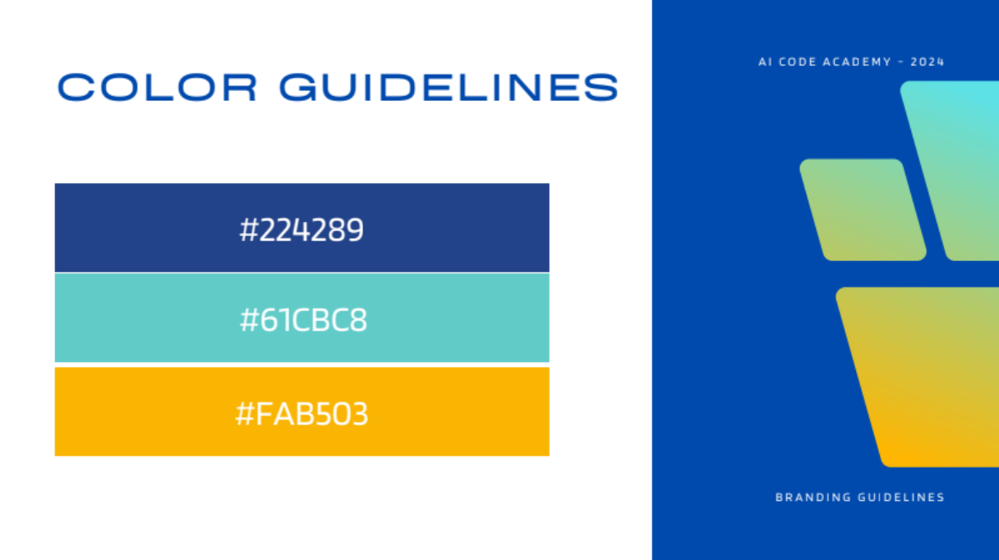
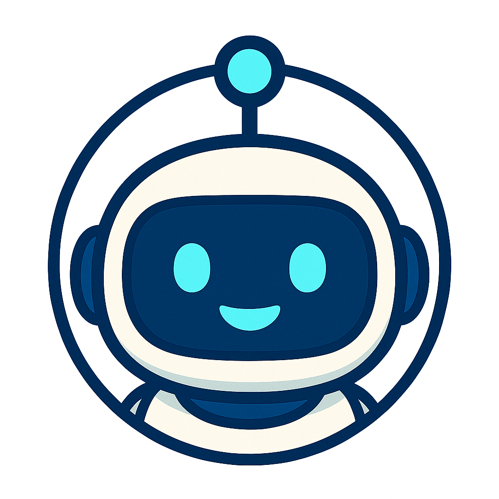
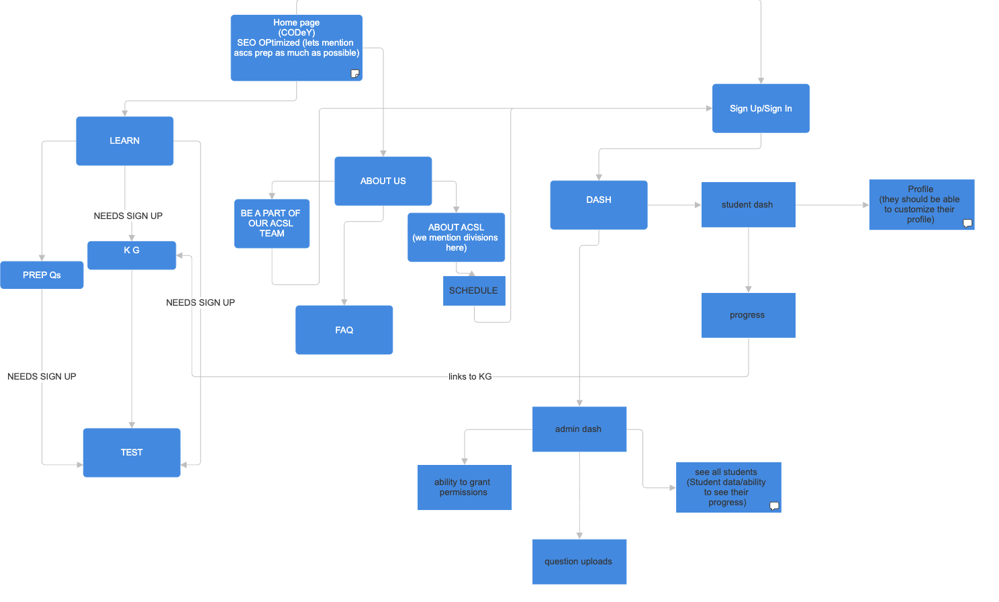
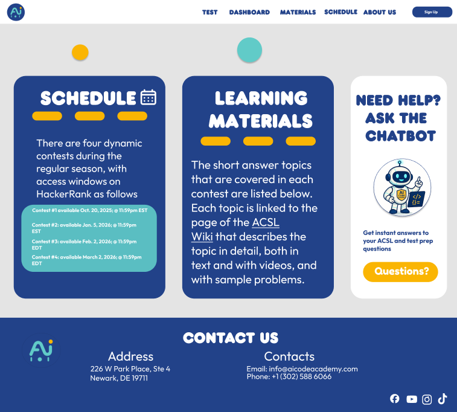
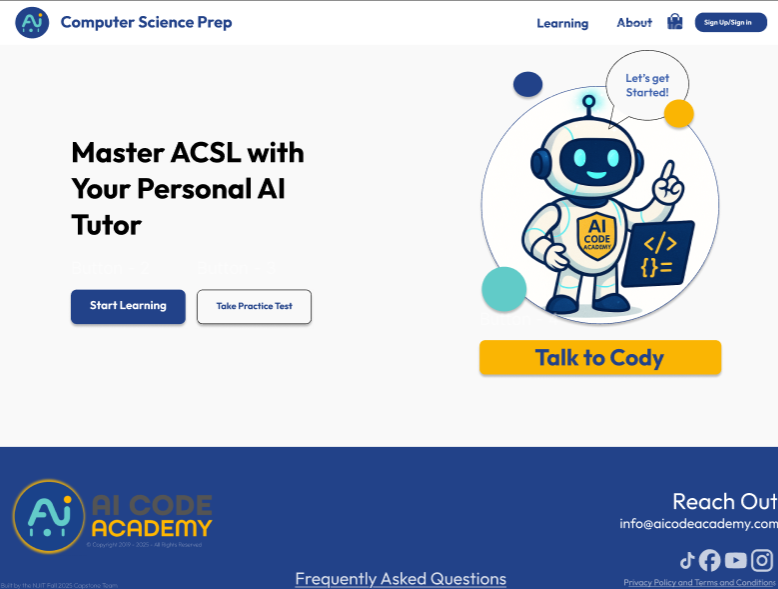
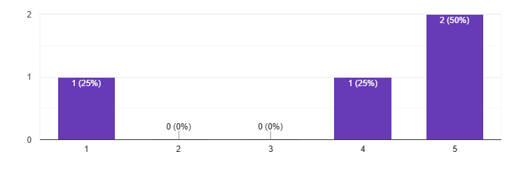
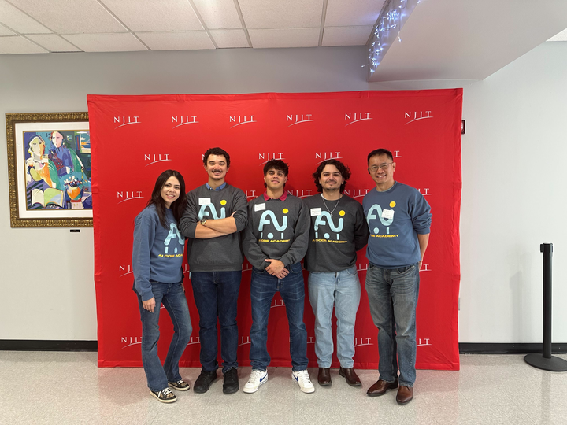
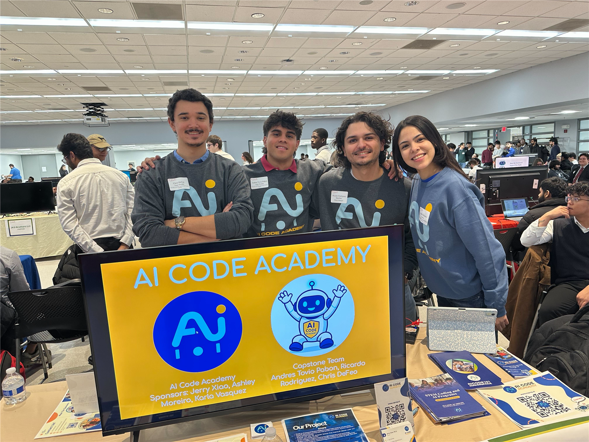
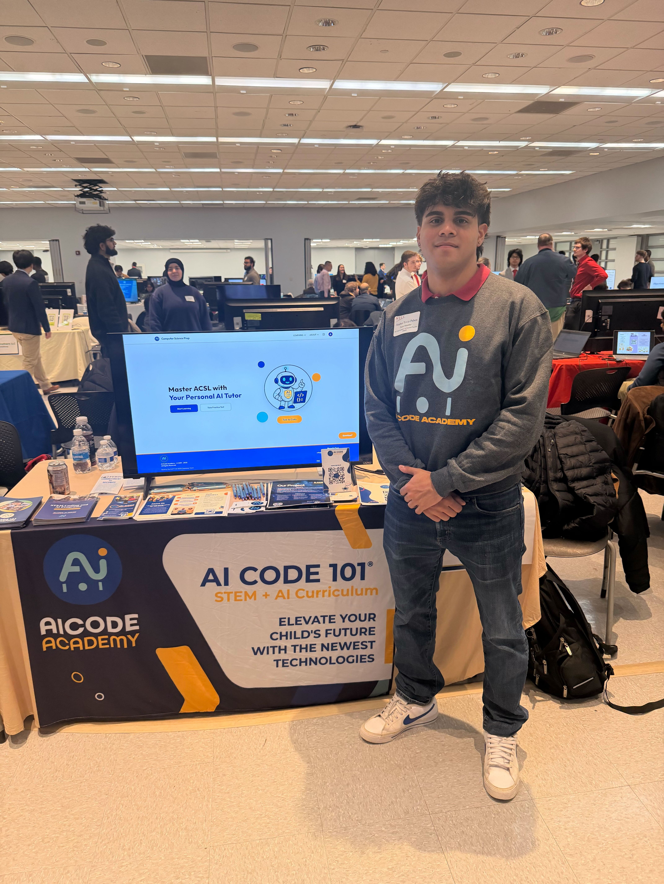
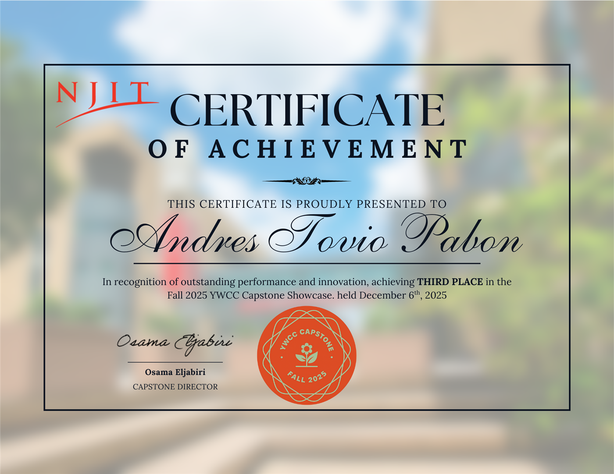

Case Study
My team created a comprehensive learning platform for their American Computer Science League (ACSL) competition students. This league is responsible for organizing and hosting programming and computer science contests for K-12 schools, organizations, and local schools.
The learning site features a knowledge graph of ACSL topics, where we focused on elementary division students to enable them to take AI-enhanced practice exams to test their skills.
The website features a chatbot microservice where students can ask detailed questions related to the ACSL material. Students will receive appropriate human-like feedback for their skill level.
To prepare for competitive computer science leagues, students often learn in a context where their learning process remains opaque to them; there are no clear indicators of which concepts are known, which are weak, or which concepts relate to others at a given time. Thus, without necessary adaptations, students are left practicing incorrect concepts or concepts with gaps at various levels.
From the learning practice point of view, the fact is that very little is known about the interaction between the subject matter and the students outside the classroom, and therefore it is very difficult to intervene. The absence of any system for the integrated tracking of progress makes the whole situation very inefficient for the students, as well as the instructors.
This project focused on building an adaptive AI Tutor Chatbot utilizing AI integration in a platform for AI Code Academy to assist students in preparing for the American Computer Science League. AI Code Academy provides students with curriculum-aligned descriptions and adaptive practice problems, tailored to their level of performance. Additionally, because there are different levels of division, they decided to split the levels into Elementary Division, Junior Division, and Senior and Intermediate Divisions. As aforementioned, there will be a visual knowledge graph illustrating students' learning progress to guide them to learning resources in areas that have mastered and areas that need room for mastery.
Responsible for the management of AI Code Academy.
Responsible for creating a comprehensive learning platform for their American Computer Science League (ACSL) competition students.
They teach study materials to students.
They experience the learning aspects of the study materials and compete in the ACSL.
This moodboard is the design color preference created by Karla Vasquez. Since this was given to me and already premade, I took it into consideration for my design choices.



Disclaimer: Some parts of the Figma file will be anonymized to adhere to NDA guidelines. For details on my work, reach out to me.
Based on the material that was given to me, such as brand identity, I need to start from scratch and work in a fast-paced environment to collaborate with developers and deliver a semester-long project. The design phase was divided into two phases (Phase 1 and Phase 2). Phase 1 focused on brainstorming ideas for each page the sponsors wanted to have.

Based on these ideas, the sponsors had different suggestions, which I later took and redefined each page based on their needs. I wanted the pages to be more simplified, user-friendly, tailored to K-12 students, and pages that work best for user needs. As a result, sponsors were much satisfied with the outcome and implemented it into their deployed website for participants to navigate and give later feedback.

We conducted a usability test with four AI Code Academy coaches. We asked them to conduct five tasks with the deployed website. Due to the NDA guidelines, we summarized participants' responses rather than reporting verbatim. The tasks are as follows:
Feedback Question:
What was your experience like when attempting to begin a conversation with the chatbot?
Overall summarized response:
Participants generally found the chatbot easy to start and engaging, with several noting quick and insightful responses once the topic was understood. Some users experienced a slightly slow start or felt the answers were not always helpful or relevant, indicating inconsistency in response quality. Visual design elements (color differentiation between questions and responses) were positively received and improved readability.
Feedback Question:
Describe the clarity and helpfulness of the chatbot's response.
Overall summarized response:
Participants were mostly satisfied with the level of explanation offered by the chatbot, especially in terms that would make it accessible to younger students. Repetition and breaking things down step by step were considered helpful. Nonetheless, some encountered answers that were too vague or irrelevant, with too many disclaimers.
Feedback Question:
How would you describe your experience finding the avatars?
Overall summarized response:
Experiences were mixed. Some users successfully found and changed avatars through the profile section and found the chatbot helpful in guiding them. Others could not locate the avatar feature at all, suggesting discoverability issues. Users liked the concept of "mascots" but wanted more customization options and clearer defaults.
Feedback Question:
What was your experience navigating the website to locate that page?
Overall summarized response:
Navigation was generally described as intuitive and easy, with users able to locate pages through the menu or learning tab. However, at least one participant encountered functional issues, where pages would not open and only PDFs were accessible.
Feedback Question:
How would you describe the dashboard's layout and the way the progress information was presented?
Overall summarized response:
The student dashboard was generally praised for its clean, organized layout and ease of use, with users appreciating the high-level view of overall progress. However, several usability issues were identified, including limited visibility into completed exercises, inconsistent layouts across divisions, confusing default navigation behavior, incorrect practice test answers, and accessibility problems where some users were unable to access the dashboard or encountered blank pages.
Feedback Question:
Overall, how was your experience using the practice tests?
Average rating: 3.75/5

The Capstone team and I presented our product in front of three professional judges during the Final Capstone presentation. The judges asked a lot of insightful questions and were satisfied with the outcome of the product. As a result, the team placed in third place among 40+ Capstone projects.




Being the Lead UX/UI Designer for this project, I was mainly responsible for converting the issue of disjointed learning experiences that are not adaptive, into a clear and intuitive interface. The problems identified in the problem statement showed that there was a lack of transparency regarding how the students perceived their progress and how they detected the conceptual gaps in their preparation for ACSL. Going through this process, my design was mainly influenced by the very fact that the experience was to be created that would highlight the major factors of clarity, feedback, and visibility of learning outcomes.
I have designed the interface showing the potential of adaptive learning through straightforward navigation, a good visual hierarchy, and significant indicators of progress.
Since this a project designed and built from scratch, I wasn't sure what the sponsors wanted. What I would have done differently is clarify what they really wanted in the beginning, so that I could have conducted interviews in the beginning and informed my sponsors of what UI/UX Design is since they somewhat had an idea of what responsibilities a designer does.
Moving forward, the next cohort of the Spring 2026 Capstone team will take over our work and continue refining the UI/UX Design and developing the interface. If possible, due to NDA guidelines, I will request to see progress based on the continuation of the project. Overall, this experience enhanced my collaborative design skills, enabling me to translate feedback from multiple stakeholders into clearer and more effective solutions.